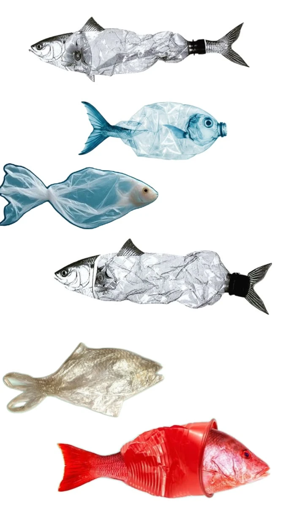
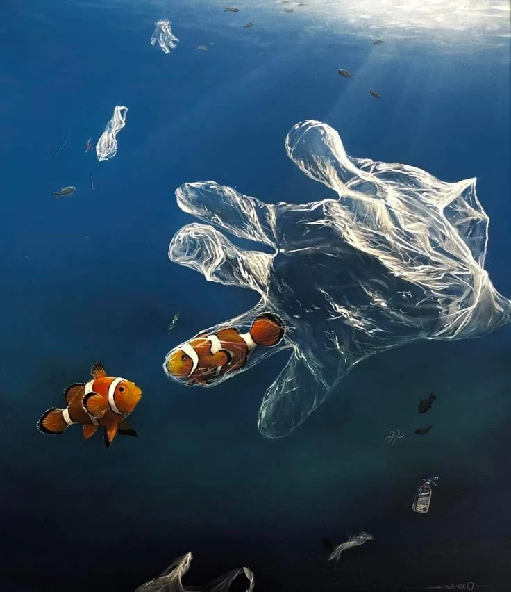

OECD — Global Plastics Outlook (2022)
2019 dünya verileri: 353 milyon ton plastik atık; toplama ve işleme kayıpları sonrası %9 geri dönüşüm. Bu oran, üretilen tüm plastiği değil plastik atığı anlatır.
Raporu inceleVerilerin, görsellerin ve tasarım ilhamlarının açık arşivi.
2019 dünya verileri: 353 milyon ton plastik atık; toplama ve işleme kayıpları sonrası %9 geri dönüşüm. Bu oran, üretilen tüm plastiği değil plastik atığı anlatır.
Raporu inceleYıllık 19–23 milyon ton: göl, nehir ve denizleri kapsayan su ekosistemlerine sızan plastik atık tahmini. Yalnızca okyanuslara ait bir sayı değildir. OECD’nin 2019 akış verileriyle toplanamaz veya birebir karşılaştırılamaz.
Kaynağı inceleAzaltma ve yeniden kullanma önceliği, ambalajı boşaltma ve yerel kabul kurallarını kontrol etme önerileri için başvuru kaynağı. ABD’ye özel kutu renkleri ve kabul listeleri Türkiye’ye genellenmemiştir. Rehber, yerel toplama talimatının yerini tutmaz.
Plastik atığı azaltmaGörseller sanatsal referans olarak kullanılır; sahadaki olayları belgeleyen fotoğraf veya Scribble’ın ürettiği eserler olarak sunulmaz. Pinterest hesabı, eserin yaratıcısı veya hak sahibi olarak kabul edilmez. Özgün üreticisi bu pinlerden doğrulanamayan çalışmalar aşağıda açıkça işaretlenmiştir.

Kullanıcı tarafından paylaşılan görsel referans. Özgün sanatçı doğrulanamadı.
Pinterest / 719379740525159749
Kullanıcı tarafından paylaşılan sanatsal kompozisyon. Pin başlığı kullanıldı; özgün sanatçı doğrulanamadı.
Pinterest / 670895675758108130Referans arşivinde tutuldu. Adobe Stock filigranı taşıdığı için görsel dosyası sitede kullanılmadı.
Pinterest / 881861170807378464Scribble için SVG ile hazırlanan kavramsal PET şişe ve metal kutu kompozisyonu. Gerçek bir veri grafiği değildir; nesne sayıları istatistik temsil etmez.
Denizden toplanan plastikleri fotoğrafın diliyle yeniden görünür kılan seri. Site, sanatçının eserlerini kopyalamaz; özgün çalışmalara yönlendirir.
mandy-barker.comKıyıya vuran atıkları, bulundukları çevrede renk temelli yerleştirmelere dönüştüren çalışma. Fotoğraf serisi ve filmler için sanatçının resmî arşivi.
Fotoğraf serisi · Filmler002 / Recycle, Scribble’ın geri dönüşüm farkındalığı üzerine kurgulanan tasarım ve geliştirme projesidir. Bir belediye, yardım kuruluşu, atık toplama servisi veya sertifikasyon kuruluşu değildir. Görseller ilgili hak sahiplerine aittir; kaynak göstermek mülkiyet veya lisans devri anlamına gelmez.